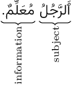
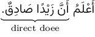
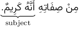
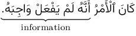
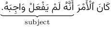
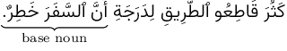
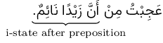

Not ready for study.
21 إِنَّ and its sisters
21.1 Introduction
In the basic subject-information sentence, both the subject and the information are in the u-state. For example:

In the above sentence both the subject ٱَلرَّجُلَ “the man”, and the information مُعَلِّمٌ “a teacher” are in the u-state. In this chapter we will study a family of particles, called إِنَّ and its sisters, that modify the subject-information sentence by placing the subject in the a-state instead of the u-state. For example,
إِنَّ ٱلرَّجُلَ مُعَلِّمٌ.
ʾinna -rrajula muɛallimun.
“Indeed the man is a teacher.”
Note how, in the above example, the subject ٱَلرَّجُلَ “the man” is now in the a-state. The information مُعَلِّمٌ “a teacher” remains in the u-state.
The particles constituting the family of إِنَّ and its sisters are:
- إِنَّ ʾinna
- أَنَّ ʾanna
- کَأَنَّ kaʾanna
- لَـٰکِنَّ lākinna
- لَيْتَ layta
- لَعَلَّ laɛalla
We shall now study each of these particles.
21.2 إِنَّ ʾinna
إِنَّ ʾinna is used to begin independent sentences. It has an emphatic meaning, as if the speaker is asserting the information about the subject. It is often translated into English as “indeed” or “verily”, but it is also often left untranslated.
إِنَّ ʾinna is only used to begin subject-information sentences. Verbal sentences cannot be introduced by إِنَّ ʾinna directly. (Later, in section ??, we shall see how to overcome this restriction.). For example,
إِنَّ ٱلدِّينَ عِنْدَ ٱللَّـٰهِ ٱلْإِسْلَامُ.
ʾinna -ddīna ɛinda -llāhi -lʾislāmu.
“Indeed, the religion in the sight of Allāh is Islām.” (Qurʾān 3:19, trans. Saheeh International)
إِنَّ ʾinna may be preceded by other particles like وَ “and”, فَ “so”, and ثُمَّ “then”. For example,
ٱُطْلُبِ ٱلْعِلْمَ ٱلنَّافِعَ. فَإِنَّ طَلَبَ ٱلْعِلْمَ ٱلنَّافِعَ عَمَلٌ صَالِحٌ. وَإِنَّ تَرْکَهُ غَفْلَةٌ. “Seek the useful knowledge. For indeed the seeking of the useful knowledge is a good deed. And indeed leaving it is a negligence.”
The subject of إِنَّ ʾinna may be a noun phrase, in which case, any describers or replacements of the subject are also in the a-state. Examples:
إِنَّ هَـٰؤُلَاءِ ٱلرِّجَالَ ٱلْکِرَامَ أَصْدِقَائِي.
“Indeed these noble men are my friends.”
إِنَّ ʾinna may have multiple subjects, each in the a-state, separated by وَ. Example,
إِنَّ ٱلْمُسْلِمِينَ وَٱلْمُسْلِمَاتِ يَعْبُدُونَ ٱللَّـٰهَ.
“Indeed the Muslim men and Muslim women worship Allāh.”
If the information of the first subject has been mentioned before the second subject, then the second subject may optionally be in the a-state or the u-state. For example:
إِنَّ زَيْدًا جَالِسٌ وَعَمْرًا.
or
إِنَّ زَيْدًا جَالِسٌ وَعَمْرٌو.
“Indeed Zayd is sitting and ʿAmr [as well].”
إِنَّ هَـٰذَا ٱلْکِتَابَ لِي وَذَ ٰلِکَ ٱلْکِتَابَ لَکَ.
or
إِنَّ هَـٰذَا ٱلْکِتَابَ لِي وَذَ ٰلِکَ ٱلْکِتَاکُ لَکَ.
“Indeed this book is for me and that book is for you.”
إِنَّ ʾinna may be used to begin sentences with an indefinite subject. For example,
إِنَّ مَلِکًا مِنَ ٱلْهِنْدِ کَتَبَ إِلَىٰ أَحَدِ وُزَرَائِهِ.
“Indeed a king from India wrote to one of his ministers.”
Note that in all the above examples that إِنَّ ʾinna is only used to begin subject-information sentences. Verbal sentences cannot be introduced by إِنَّ ʾinna directly. (Later, in section ??, we shall see how to overcome this restriction.). By default, the subject of إِنَّ ʾinna must directly follow it with no intervening words or particles. The only exception is when the information consists of a prepositional or adverbial phrase, it is then allowed to precede the subject. The subject, in any case, shall be in the a-state. For example,
إِنَّ فِي ٱلْبَيْتِ رَجُلًا.
“Indeed, in the house, is a man.”
إِنَّ تَحْتَ ٱلشَّجَرَةِ کَنْزًا ثَمِينًا.
“Indeed, under the tree, is a precious treasure.”
This reverse order is permitted even when the subject is definite. For example,
إِنَّ مَعَکَ صَاحِبَکَ.
“Indeed, with you, is your companion.”
This puts the logical accent on the subject صَاحِبَکَ “your companion”. If the subject is placed first then this puts the logical accent on the information:
إِنَّ صَاحِبَکَ مَعَکَ.
“Indeed your companion is with you.”
If the subject contains a pronoun that refers to a noun in the information then the information must precede the subject. For example,
إِنَّ فِي ٱلْمَصْنَعِ عُمَّالَهُ.
“Indeed, in the factory, are its workers.”
إِنَّ أَمَامَ ٱلدَّارِ حَارِسَهَا.
“Indeed, in front of the door, is its guard.”
21.2.1 Pronoun subjects
The subject of إِنَّ may be a pronoun instead of a noun. For this the attached pronouns are used. For example,
لَا تَقْطَعْ تِلْکَ ٱلشَّجَرَةَ فَإِنَّهَا ظَلِيلَةٌ.
“Don’t cut that tree, for it is shady.”
إِنَّکُمَا صَدِيقَايَ.
“You2 are my friends.”
The speaker pronouns, both singular and plural, may optionally keep or drop their ن. So for the singular speaker pronoun both إِنَّنِي ʾinnanī and إِنِّي ʾinnī may be used. And for the plural speaker pronoun both إِنَّنَا ʾinnanā and إِنَّا ʾinnā may be used. Examples:
إِنِّي مُسْلِمٌ.
or
إِنَّنِي مُسْلِمٌ.
“Indeed I am a Muslim.”
إِنَّنَا کَاتِبُو هَـٰذَا ٱلْکِتَابَ.
or
إِنَّا کَاتِبُو هَـٰذَا ٱلْکِتَابَ.
“Indeed we are the writers of this book.”
إِنَّ with the speaker pronouns are often used with doer verbal nouns to signify that the speaker intends to to the action of the verb. For example,
إِنِّي ذَاهِبٌ إِلَىٰ ٱلْمَسْجِدِ.
“I’m going to the mosque.”
We also mentioned this point in section 19.4.2.
21.2.2 إِنَّ ʾinna with a strengthening لَ
The strengthening particle لَ adds extra emphasis and may optionally be used between the subject of إِنَّ and its information. If the subject occurs first (as is the default) then لَ is connected to and placed directly before the information. For example:
إِنَّ زَيْدًا لَقَائِمٌ.
“Indeed Zayd is definitely standing.”
If the information precedes the subject, then then لَ is connected to and placed directly before the subject. For example:
إِنَّ فِي ٱلْبَيْتِ لَرَجُلًا.
“Indeed, in the house, is definitely a man.”
The strengthening particle لَ is only used with إِنَّ and not for any of its other sisters (إِنَّ, أَنَّ, کَأَنَّ, لَـٰکِنَّ, لَيْتَ, and لَعَلَّ).
21.2.3 Commonality of rules for إِنَّ and its sisters
Unless otherwise noted, the rules we have presented above for إِنَّ, for example, the subject being in the a-state, the order of the subject and the predicate, the use of attached pronouns for the subject, etc., apply also to its other sisters.
The strengthening particle لَ, as mentioned above, is only used with إِنَّ and not for any of its other sisters.
21.3 أَنَّ ʾanna
The particle أَنَّ ʾanna can be translated as “that”. It is similar to إِنَّ in that it is asserts the information about the subject. But أَنَّ is different from إِنَّ in that إِنَّ, its subject, and its information together constitute a complete sentence. Whereas the أَنَّ clause (أَنَّ , its subject, and its information together) does not constitute a complete sentence. For example, consider the expression:
زَيْدٌ صَادِقٌ.
“Zayd is truthful.”
This is a complete sentence. But if we add أَنَّ “that” to its beginning, it no longer remains a complete sentence:
أَنَّ زَيْدًا صَادِقٌ
“that Zayd is truthful”
We need to additional words, external to the أَنَّ clause to complete the sentence. We will see examples of this below.
21.3.1 The أَنَّ clause in place of the direct doee

“I know that Zayd is truthful.”
Note how, in the example above the أَنَّ clause (أَنَّ زَيْدًا صَادِقٌ) has occupied the place of the direct doee of the verb أَعْلَمُ.
In a similar manner, أَنَّ clauses can be placed where one would expect other noun positions, such as: a subject, an information, a doer, and more. Here are some examples:
21.3.2 The أَنَّ clause in place of the doer
Example:
“That you are sick has reached me.” (“It has reached me that you are sick.”)
21.3.3 The أَنَّ clause in place of the subject
Example (with information before subject in sentence word order):

“From his characteristeics is that he is noble.”
21.3.5 أَنَّ with کَانَ
As you know, کَانَ’s doer is also its subject, and its doee is also its information. The أَنَّ clause can occur in either the subject or the information of کَنَ. For example (as the information):

“The matter was that he didn’t do his obligation.”
Now as the subject:

“That he didn’t do his obligation was the matter.”
Note that in the latter case, the information precedes the subject.
21.3.6 The أَنَّ clause in place of an i-state noun
The أَنَّ clause can occur in place of an i-state base noun in an annexation. Example:

“The highway robbers (literally: the cutters of the way) have increased to the degree that the journey is dangerous.”
The أَنَّ clause can occur in place of an i-state noun directly following a preposition. Example:

“I wondered at that Zayd is asleep.”
21.3.6.1 Optionally deleting the preposition directlt before an أَنَّ clause
If an أَنَّ clause directly follows a preposition, it is permissible to optionally delete the preposition as long as the meaning remains clear. So the previous example can be expressed without the preposition مِنْ with the same meaning:
عَجِبْتُ أَنَّ زَيْدًا نَائِمٌ.
“I wondered at that Zayd is asleep.”